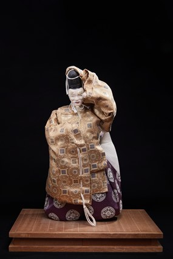

Okina là tác phẩm thuộc dòng Noh & Kabuki Ningyō, tái hiện nhân vật 翁 (Okina) – một trong những hình tượng cổ xưa và linh thiêng nhất của nghệ thuật sân khấu Noh. Không chỉ là một vai diễn, Okina còn được xem như một nghi lễ cầu chúc may mắn, thường được trình diễn trong những dịp lễ quan trọng và đầu năm mới.
Tác phẩm khắc họa hình ảnh ông lão trong bộ lễ phục truyền thống với hoa văn tinh xảo, đội mũ eboshi và thực hiện một động tác biểu diễn đặc trưng của sân khấu Noh. Khuôn mặt thanh tĩnh cùng tư thế uy nghi thể hiện tinh thần trang nghiêm và vẻ đẹp cổ điển của nghệ thuật biểu diễn Nhật Bản.
Trong văn hóa Nhật Bản, Okina là biểu tượng của trường thọ, hạnh phúc, sự thịnh vượng và hòa bình. Qua kỹ thuật chế tác thủ công tinh xảo, tác phẩm không chỉ giới thiệu vẻ đẹp của nghệ thuật búp bê truyền thống mà còn góp phần gìn giữ một trong những di sản sân khấu lâu đời và giàu giá trị tinh thần của Nhật Bản.
翁は能人形・歌舞伎人形の作品で、能の中でも最も古く神聖な存在のひとつである「翁」を再現しています。翁は単なる役柄ではなく、幸運を祈る儀式とも考えられており、大切な祭礼や新年に演じられることが多くあります。
本作は、精巧な文様の伝統的な礼装をまとい、烏帽子をかぶって、能ならではの舞の所作をとる老人の姿を表しています。静かな表情と威厳ある姿勢が、日本の舞台芸術の厳かな精神と古典的な美しさを表しています。
日本文化において翁は、長寿、幸福、繁栄、平和の象徴です。精巧な手仕事を通して、本作は伝統人形の美しさを伝えるだけでなく、日本で最も古く精神的価値の高い舞台芸術の遺産のひとつを今に伝えています。